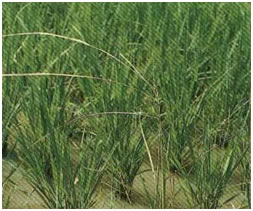
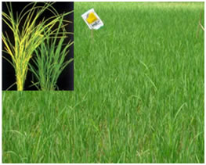
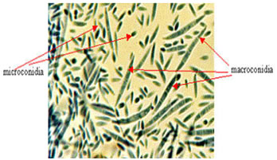
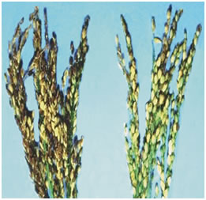

RICE :: FUNGAL DISEASES :: FOOT ROT OR BAKANAE DISEASE
Foot rot or Bakanae disease - Fusarium moniliforme(Sexual stage: Gibberella fujikuroi)
Symptoms
Infected seedlings in nursery are lean and lanky, much taller and die after some time. In the main field, the affected plants have tall lanky tillers with longer internodes and aerial adventitious roots from the nodes above ground level. The root system is fibrous and bushy. The plants are killed before earhead formation or they produce only sterile spikelets. When the culm is split open white mycelial growth can be seen.
{kind=link}
|  |  |
Pathogen
Fungus produces both macroconidia and microconidia. Microconidia are hyaline, single
celled and oval. Macroconidia are slightly sickle shaped, and two to five celled.The fungus produces the phytotoxin , fusaric acid, which is non-host specific.
|  |
Management
- The fungus is externally seed-borne.
- Treat the seeds with Thiram or Captan or Carbendazim at 2 g/kg.
Grain discolouration - Drechslera oryzae, D. rostratum, D.tetramera, Curvularia lunata, Trichoconis padwickii, Sarocladium oryzae, Alternaria tenuis, Fusarium moniliforme, Cladosporium herbarum, Epicoccum purpurascens, Cephalosporium sp.,Phoma sp., Nigrospora sp.
Symptoms
The grains may be infected by various organisms before or after harvesting causing discoloration, the extent of which varies according to season and locality. The infection may be external or internal causing discoloration of the glumes or kernels or both. Dark brown or black spots appear on the grains.
The discoloration may be red, yellow, orange, pink or black, depending upon the organism involved and the degree of infection. This disease is responsible for quantitative and qualitative losses of grains.
|  |
Favourable Conditions
- High humidity and cloudy weather during heading stage
Disease cycle
The disease spreads mainly through air-borne conidia and the fungus survives as parasite and saprophyte in the infected grains, plant debris and also on other crop debris.
Management
- Pre and post-harvest measures should be taken into account for prevention of grain discolouration.
- Spray the crop at boot leaf stage and at 50% flowering with Carbendazim + Mancozeb (1:1) @ 0.2%.
- Store the grains with 13.5-14% moisture content.